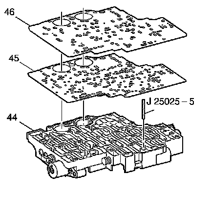
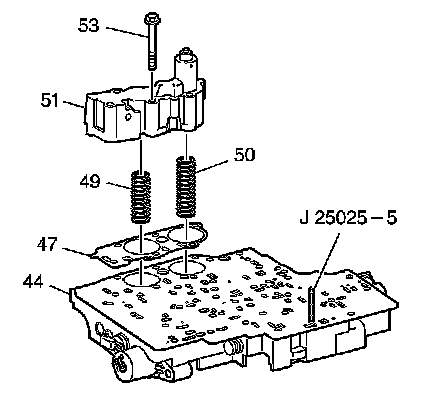
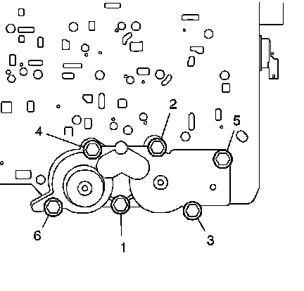

Third/Fourth Clutch Accumulator Housing Installation
Third/Fourth Clutch Accumulator Housing Installation
Tools Required
J 25025-5 Dial Indicator Mounting Post - M6 x 1.00

1. Install the J 25025-5 into the control valve body bolt hole where the manual shaft detent roller and spring assembly is mounted.
2. Install the control valve body gasket (45).
3. Install the control valve body spacer plate (46).

4. Install the accumulator housing gasket (47).
5. Install the 3rd clutch accumulator piston spring (50). This spring is the longer of the 2 accumulator springs.
6. Install the 4th clutch accumulator piston spring (49).
7. Install the 3rd and 4th clutch accumulator housing (51) onto the control valve assembly (44).
8. Install the 6 3rd and 4th clutch accumulator housing bolts (53). Tighten the bolts finger tight and start from one end of the accumulator housing toward the opposite end.

Notice: Refer to Fastener Notice.
9. Tighten the 3rd and 4th clutch accumulator housing bolts (53) in the order shown.
Tighten the bolts to 11 N.m (97 lb in).
10. Remove the J 25025-5.